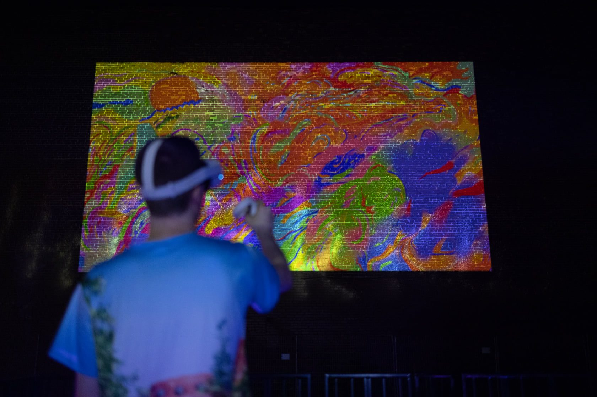
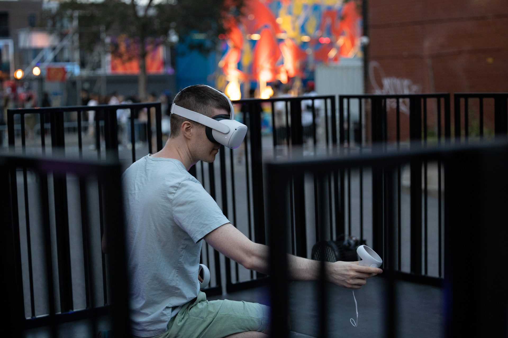
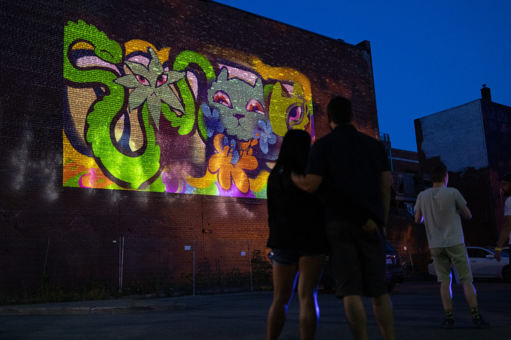
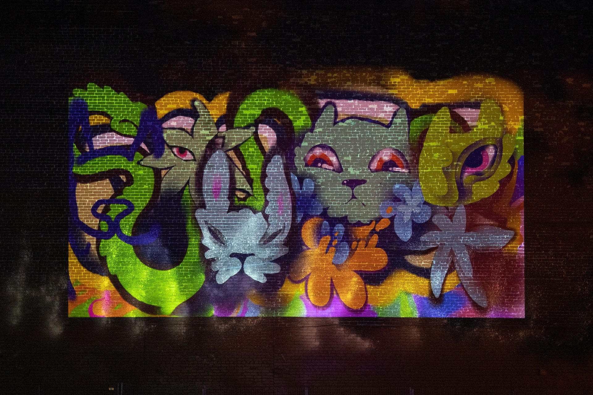
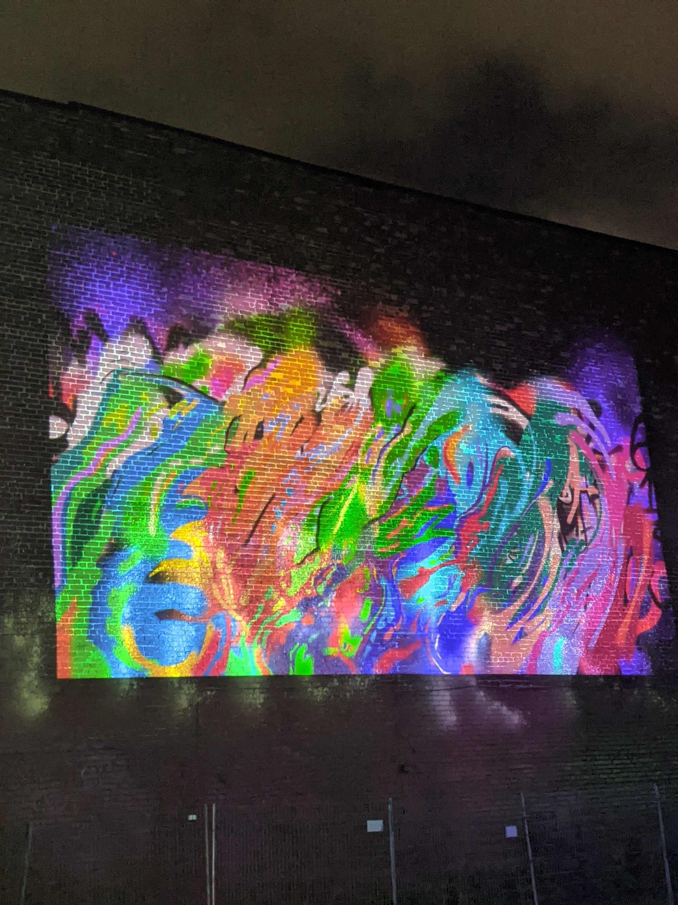
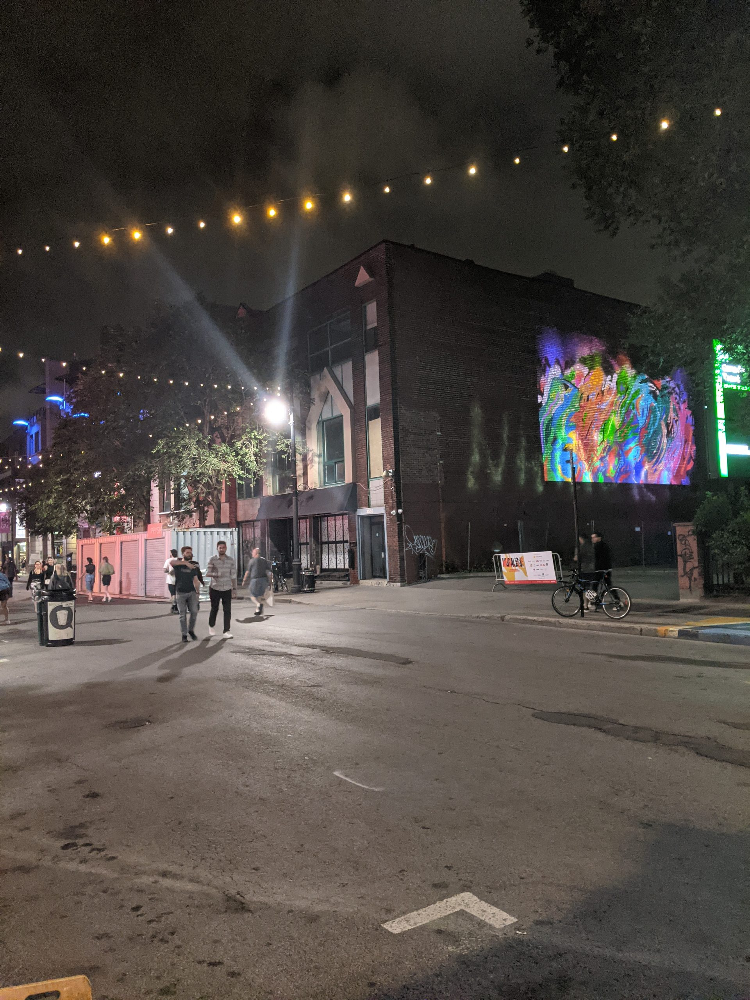
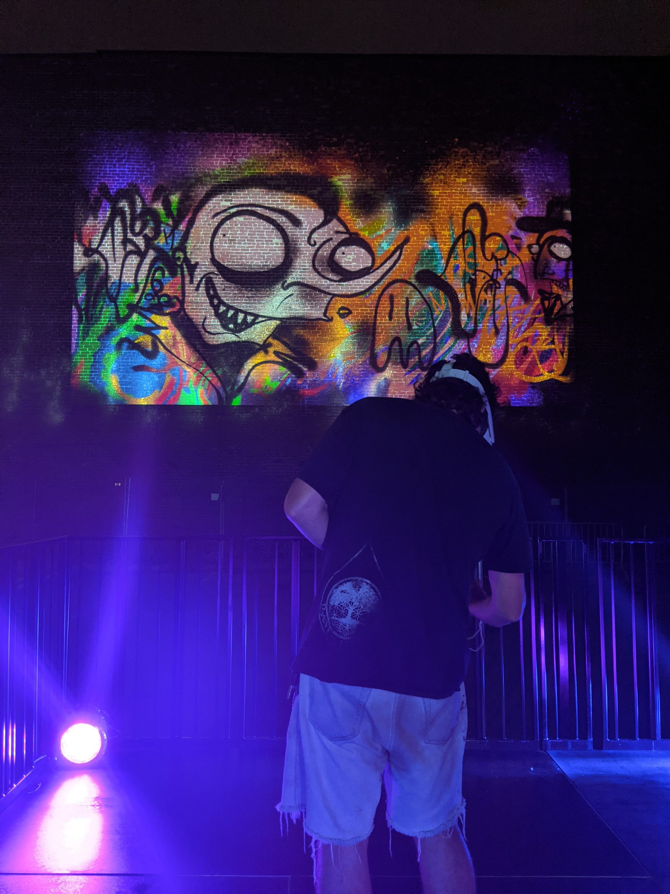
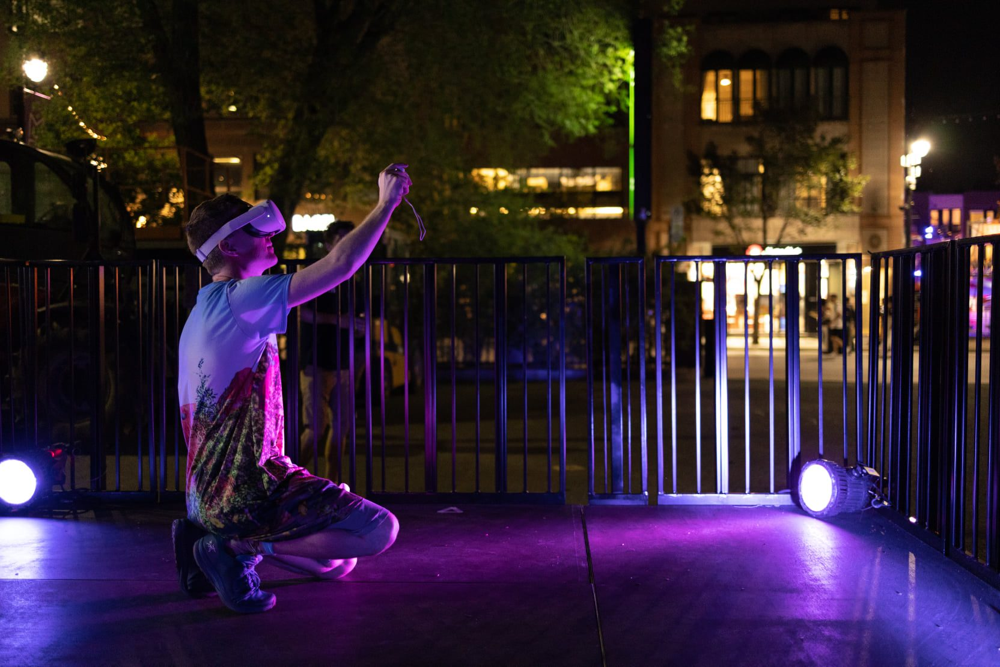
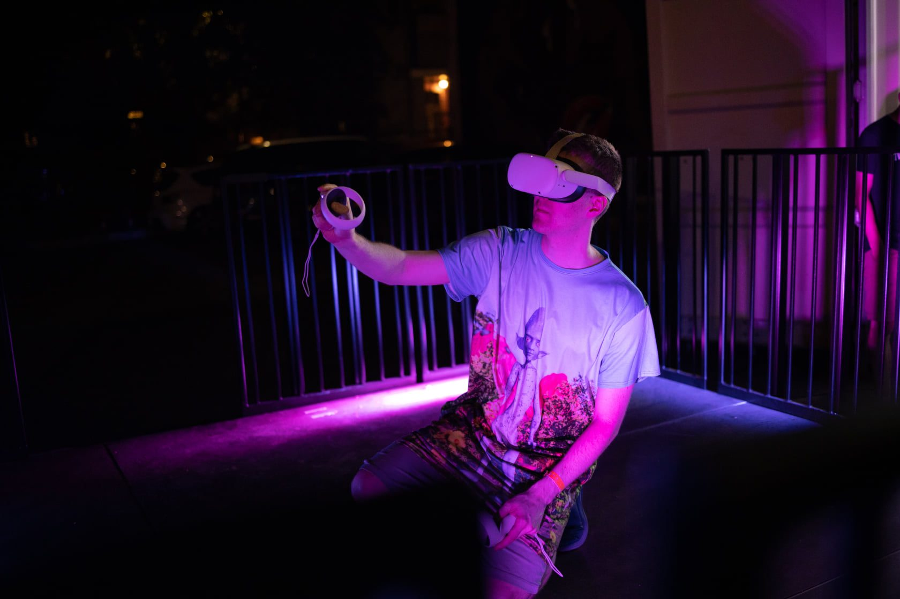
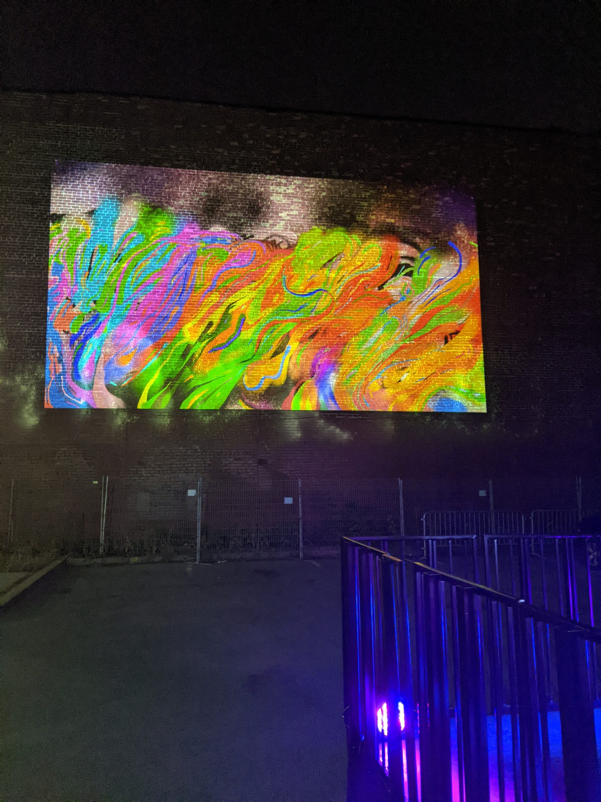

For the 2021 edition of MURAL Festival, Samuel coordinated a live VR graffiti program: artists spray-painting in virtual reality using Kingspray, their strokes projected in real time onto building walls along Boulevard Saint-Laurent.
The program brought together Montreal street artists Cryote (Sebastian Millar), azdead (Elliot Fockyer), and Zoltan alongside Samuel to paint live on a virtual canvas that was simultaneously projected as a massive mural on the side of a building. Audiences on the boulevard watched the artwork take shape stroke by stroke, bridging the intimacy of VR creation with the public spectacle of street art.
Samuel handled the technical coordination, VR setup, projection system, and artistic vision for the program. The live painting sessions ran across multiple evenings during the festival (August 12–22), becoming a nightly attraction that drew crowds to the projection site.

Each artist took turns in a VR headset on-stage, spray-painting in Kingspray while a projector beamed their virtual canvas onto the brick wall in real time. The audience saw every gesture, every layer of color, every hesitation—the creative process made public at building scale.
The format turned VR from a solitary, enclosed experience into a shared spectacle. Where gallery VR typically involves one person at a time behind a headset, this inverted the model: one person in VR, hundreds watching from the street.

One person in VR, hundreds watching from the street. The live projection turned a solitary medium into public performance.


Cryote (Sebastian Millar) — A multimedia artist whose practice merges physical and digital creation. Known for his murals and nature-inspired creatures, Cryote brought his signature organic forms into VR, sculpting elaborate characters that sprawled across the projected wall.
azdead (Elliot Fockyer) — A Montreal artist who translated his bold, graphic graffiti style into the virtual spray can. His sessions produced vivid, high-energy compositions that filled the wall with color.
Zoltan — Joined the live painting program, contributing to the collaborative energy of the nightly sessions.





The VR graffiti projection was covered by La Presse and Radio-Canada, who highlighted MURAL’s incursion into virtual public art as a defining element of the 2021 edition. The program demonstrated that VR art could work not just in galleries and headsets, but as large-scale public spectacle.
